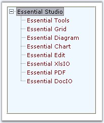
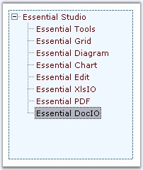

3D Border for TreeView
The following properties sets 3D border for the treeview.
|
TreeViewAdv Property |
Description |
|
BorderStyle |
Sets the border style for the Treeview control.
· FixedSingle - a normal border, · Fixed3D - 3D appearance. |
|
Border3DStyle |
Indicates the style of the 3D border when BorderStyle is set to Fixed3D.
·
RaisedOuter · RaisedInner · SunkenInner · Raised · Etched · Bump · Sunken (Default) · Adjust · Flat |

Figure 1150: BorderStyle = "Fixed3D"; Border3DStyle = "Bump"
2D Border for TreeView
The following properties let you set customized 2D border.
 Note: The settings will effect only when
TreeViewAdv.BorderStyle property is set to FixedSingle.
Note: The settings will effect only when
TreeViewAdv.BorderStyle property is set to FixedSingle.
|
TreeViewAdv Property |
Description |
|
BorderColor |
Indicates the color of the 2D border. |
|
BorderSides |
Specifies the sides of the control to which border should be set. |
|
BorderSingle |
Indicates the 2D border style. The options are,
· Solid (Default), · Dotted, · Dashed, · Inset, · Outset, · None. |
|
[C#]
this.treeViewAdv1.BorderColor = System.Drawing.Color.SteelBlue; this.treeViewAdv1.BorderSingle = System.Windows.Forms.ButtonBorderStyle.Dashed; this.treeViewAdv1.BorderStyle = System.Windows.Forms.BorderStyle.FixedSingle; |
|
[VB.NET]
Me.treeViewAdv1.BorderColor = System.Drawing.Color.SteelBlue Me.treeViewAdv1.BorderSingle = System.Windows.Forms.ButtonBorderStyle.Dashed Me.treeViewAdv1.BorderStyle = System.Windows.Forms.BorderStyle.FixedSingle |

Figure 1151: BorderStyle = "FixedSingle"; BorderSingle = "Dashed"; BorderColor = "SteelBlue"